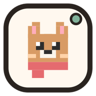
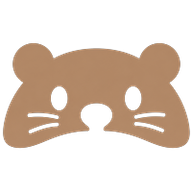
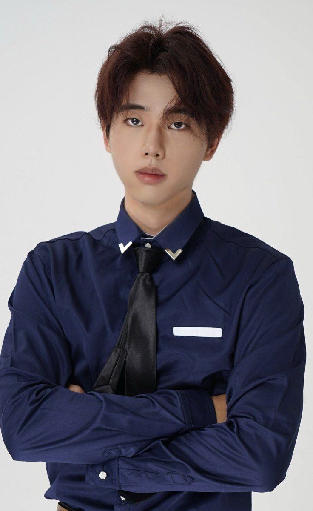

Interaction DesignerGuangzhouGAFA · 2023–2027
Leyson

01 · Web · 已上线 SIFT设计前期的 AI 方向收敛 Agent Problem设计师拿到模糊 Brief，缺的不是图，而是判断的次序。 3 人小组组长Agent 设计已上线
02 · Mobile · 原型 Picto异地情侣的低打扰陪伴 Problem即时通信把“被看见”绑成了“要回复”，异地情侣因此更累。 独立完成约 2 个月可运行原型
03 · Web + Mobile · 内测 Focenda设计师的动态日程规划 Problem设计师的时间被“非设计”吃掉：琐事多、信息散、难出结果。 用户访谈多端设计内测 10 人
04 · Product · 校企合作 CoBuddy高露洁 × 广美 亲子牙刷 Problem孩子握得住牙刷，却控制不住刷牙；家长一帮忙就变成代刷。 独立完成约 2 个月产品设计02 · About
你好，我是 Leyson。

工业设计出身，关心“人和系统之间那一点点摩擦”。我喜欢把复杂的判断拆成清楚的一步，也喜欢像素、角色这种能让产品有温度的小东西。
- 01先找到那一下“卡住”
从真实场景里找用户犹豫、绕路的地方，再决定要不要做、做多大。
- 02把判断拆成清楚的一步
复杂的选择不丢给用户，系统先给建议，人只需要确认或微调。
- 03做出来，再验证
借助 AI 工具把想法做成能用的原型，放到真实使用里迭代。